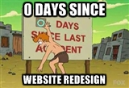

Site redesign, version five
It's been over three years since the design of this site has been updated. Time to change that!

This is the fifth revision of this site's design. Looking over previous designs, I've been happier with minimal designs, especially this one from 2012. I was inspired by many excellent designs such as Butterick's Practical Typography, Teehan+Lax, Erik Johansson, Medium and Frank Chimero.
{kind=link}
The new design is visually cleaner. I use flexbox in many places, which makes the CSS far more intuitive. The responsive parts are very simple, consisting of just ten CSS declarations.
Rather than subjecting readers to my face on every page, I have a simple stipple background on the about page, which I created using the complex but functional StippleGen.
Also, I've started working on a self-hosted visual link blog that you can check out in under inspiring clippings. I've implemented a companion Chrome extension that makes it super easy to clip inspiring content from anywhere on the web and bring it to that page.
Typography: I'm continuing to use Google fonts, which seems to be so much simpler to use than various competitors. I have not completely optimized my selection of fonts, but this is satisfactory given my belief that no design is ever finished. Performance is UX too, and aesthetic decisions need to be counterbalanced by mundane considerations like page load time. Unfortunately Dosis didn't make the cut.
Infrastructure: This site is still built using the lightning static blog engine, which I'm continuing to improve. On that front, I've dropped the ambitious goal of being able to edit content from any device using dropbox, since in practice I always author on my laptop. Instead, the focus has been on optimizing the edit flow for the local offline case, and I have built livereload into the local preview server. As far as hosting, I have conceded to GitHub Pages, and have migrated away from using S3 directly.
Thanks: to Mike, Paul, Seungho, Scott, Michael, and other awesome friends that gave me excellent design suggestions and found bugs!
While I appreciate companies like Medium and Svbtle advancing the aesthetics of the web, I completely agree with Matthew Butterick's view, and will continue self-hosting my writings for as long as possible. Long live the plurality of the web!